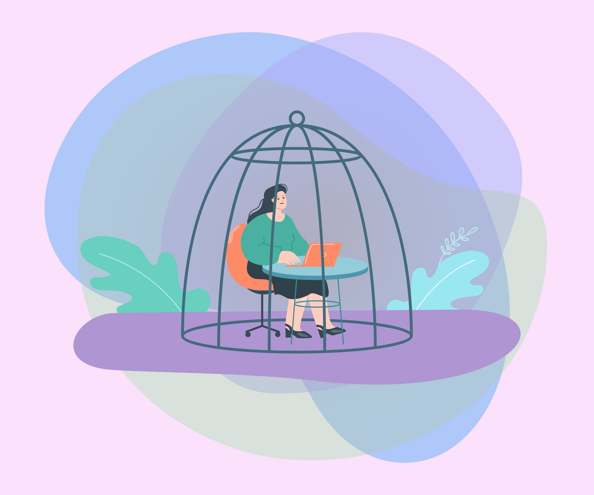
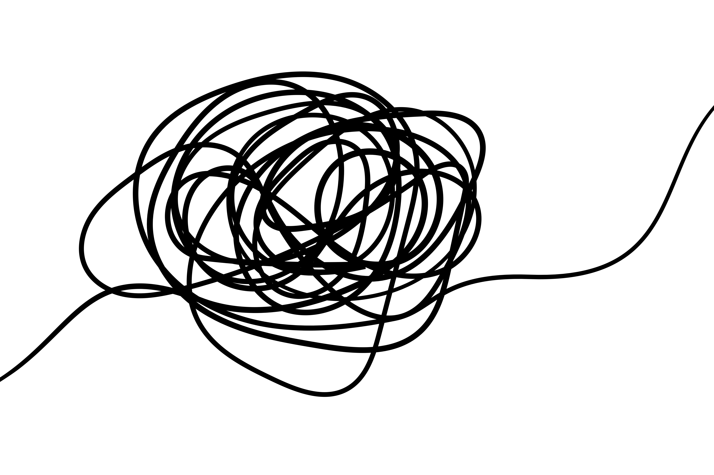

Los comienzos son difíciles...
Participar activamente en un aula virtual puede resultar difícil al principio. Es normal sentir inseguridad, no saber por dónde empezar o tener dudas sobre cómo organizarse.
Estas dificultades no significan que no puedas aprender en línea. Al contrario, reconocerlas es el primer paso para buscar estrategias que te ayuden a avanzar con más confianza.
En este apartado identificarás algunas barreras habituales y reflexionarás sobre cómo puedes afrontarlas.

Dificultades frecuentes
Algunas dificultades habituales son:

Dificultades habituales en el aula virtual
En un curso en línea es normal encontrar algunas dificultades al principio. Reconocerlas ayuda a participar con más seguridad y autonomía.
🧭
No encontrar la información
Puede ocurrir si no se revisa el menú, las secciones del curso o la página principal.
🔔
Olvidar revisar avisos
Los mensajes y avisos pueden incluir cambios, recordatorios o fechas importantes.
🤔
Miedo a equivocarse
Participar también implica practicar, preguntar y aprender de los errores.
⏰
Dejarlo para el final
Esperar al último momento dificulta revisar instrucciones, archivos y entregas.
🙋
No saber pedir ayuda
Conviene explicar la duda de forma clara y elegir el canal adecuado para consultarla.
Idea clave: estas dificultades son habituales, pero pueden superarse revisando el aula con regularidad, leyendo las instrucciones y pidiendo ayuda cuando sea necesario.
Actividad interactiva: reconoce la dificultad
Reconoce la dificultad
Lee cada situación y elige cuál es la dificultad principal. Recibirás feedback inmediato y podrás reintentar cada pregunta.
Progreso 0 de 5 completadas
Resultado 0 respuestas correctas
Pregunta 1 Localización de información
María entra al aula virtual, pero no sabe dónde encontrar la actividad de la semana.
¿Cuál es la dificultad principal?
Elige una respuesta para recibir feedback.
Pregunta 2 Avisos y mensajes
Antonio no revisa los avisos del profesorado y se entera tarde de una fecha importante.
¿Cuál es la dificultad principal?
Elige una respuesta para recibir feedback.
Pregunta 3 Participación en foros
Lucía quiere participar en el foro, pero no escribe porque piensa que su mensaje estará mal.
¿Cuál es la dificultad principal?
Elige una respuesta para recibir feedback.
Pregunta 4 Planificación
Javier deja la tarea para el último día y no tiene tiempo suficiente para revisarla.
¿Cuál es la dificultad principal?
Elige una respuesta para recibir feedback.
Pregunta 5 Pedir ayuda
Carmen tiene una duda, pero no pregunta porque no sabe a quién dirigirse.
¿Cuál es la dificultad principal?
Elige una respuesta para recibir feedback.
Actividad completada
Reconocer las dificultades
Reconocer las dificultades habituales te permite anticiparte a ellas y buscar soluciones antes de que se conviertan en un problema.
Participar activamente no significa no tener dudas, sino saber cómo actuar cuando aparecen: revisar la información, organizarte, preguntar cuando lo necesites y avanzar poco a poco.
En el siguiente apartado veremos estrategias concretas para organizar tu participación en el aula virtual.
